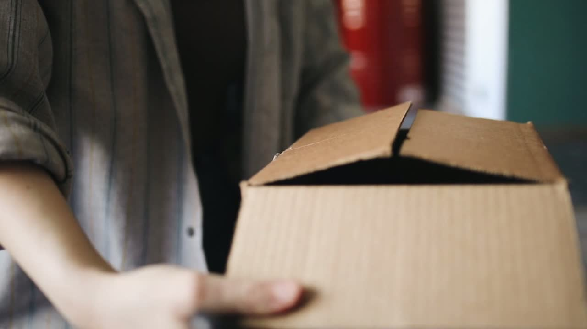

Image + video + supplied workflow context
Give the receiver an evidence-backed next step.
Review recorded Jev results, change the capture stage, and export a local review packet.

Original source frame · 00:06.80
Visible observation
Scores compare the supplied candidate answers. Check the original evidence before accepting a recommendation.
Full question, options, and recorded inputs
Capture stage — supplied by the receiver
Same photo. Different context.
Example rule
Recorded model recommendation
Reviewer note
Actions are recorded locally. The export contains the source hash, question, scores, supplied rule, and your decision.
Why Inventory?
Receiving → stock → financial records
Explore a visual evidence step alongside existing receiving and inventory workflows.
Measured in this small test
7-second video: 3.26 s
16 sampled frames. Image calls: 0.22–0.27 s. Preprocessing + local GPU inference.